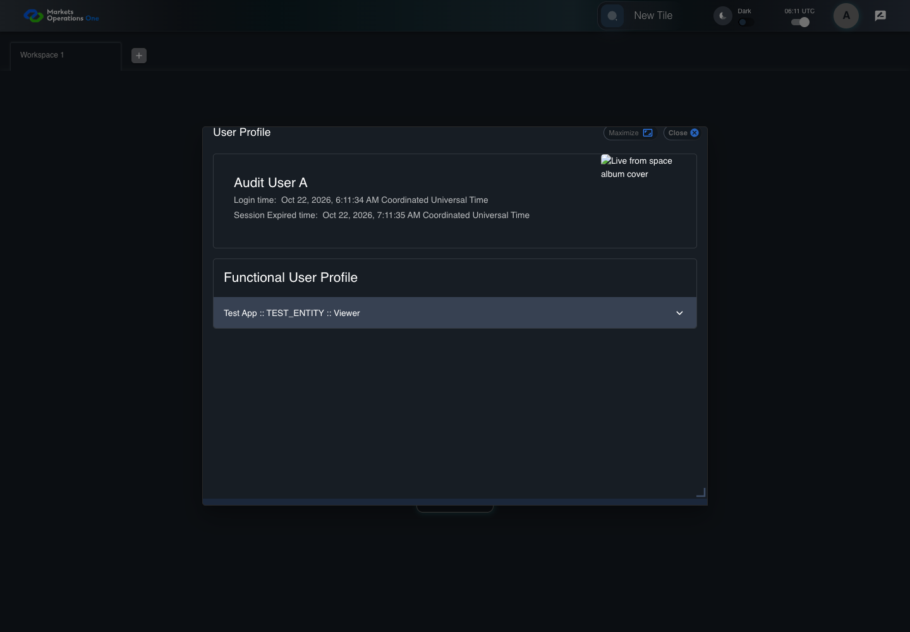

UX-011 keyboard and accessibility probe
PASS · application/run-050/ux-011-keyboard-and-accessibility-probe-517f82edf288-attempt-1 · ACTUAL_APPLICATION_LOCAL_SERVICES
Actual React shell. Controlled catalog, user identity, photo failures, and SystemJS tenant. Chromium only. Accessibility and layout outcomes are proposed probes; no approved conformance standard is inferred.
2026-10-22T06:11:34.381Z to 2026-10-22T06:11:38.805Z
Assertions and result · Artifact manifest · Exact run inputs and source hashes
Result SHA-256:6efbc123f95971bdea2255576030889f66ce08442281607f549f26d214e597bcMachine observations
- focus-trace-forward.json
02499658359030817eab81596130f3d209382eb698622591ec32d83de6aaec6f - focus-trace-reverse.json
f2a5d1d8b53f1dd59fa1835d440d098e622996a94911d5ecbb1e7176bcdaa3ad
Screenshot capture: CAPTURED. Named frames: 38.
Step screenshot bindings: COMPLETE. 5/5 canonical steps have execution screenshots.
Bindings measure structural coverage only. They do not establish screenshot content quality or relevance.
Screenshot content review: NOT_REVIEWED. Recorded context: 0/38 frames. Identical image bytes: 19 repeated frames. Recorded context does not establish human visual review.
Canonical step timeline
Given USER-A has the dialog labelled "User Profile" on the Home page visible
Execution: PASSED.
1. step-01 Visible state after step 1: Given USER-A has the dialog labelled "User Profile" on the Home page visible
2026-10-22T06:11:36.082Z · 1440×1000
Step: /Users/lushevol/code/github/ratan-release-impact/workbench/tasks/ui-test-coverage-20261022/test-cases.md:12627
SHA-256:f1ad6af715b123fdb148524e2e24b273d2b5421f473856de2e46f3d7154234f6When USER-A presses "Tab" through a complete navigation cycle inside the dialog labelled "User Profile" on the Home page
Execution: PASSED.2. focus-forward-1 Live keyboard focus checkpoint; computed CSS is retained separately.
2026-10-22T06:11:36.133Z · 1440×1000
Step: Named test assertion at the corresponding source location
SHA-256:0f3803e7ca6e7fb09ed51555c21451034cdc5bd2e1a3461e0d203d047907f73c
3. focus-forward-2 Live keyboard focus checkpoint; computed CSS is retained separately.
2026-10-22T06:11:36.192Z · 1440×1000
Step: Named test assertion at the corresponding source location
SHA-256:f1ad6af715b123fdb148524e2e24b273d2b5421f473856de2e46f3d7154234f6Image bytes match frame 1. An unchanged image can be valid for consecutive assertions. This match does not establish correct step content.
4. focus-forward-3 Live keyboard focus checkpoint; computed CSS is retained separately.
2026-10-22T06:11:36.278Z · 1440×1000
Step: Named test assertion at the corresponding source location
SHA-256:70595ba8798d4618639b634fe0a32d6d0f72e735b9d35b4e9a7e775a11899bcb5. focus-forward-4 Live keyboard focus checkpoint; computed CSS is retained separately.
2026-10-22T06:11:36.360Z · 1440×1000
Step: Named test assertion at the corresponding source location
SHA-256:e24bb221e31c06368f5a38975ab439db0f3feea7e62834f564f97ee4e1c1f463
6. focus-forward-5 Live keyboard focus checkpoint; computed CSS is retained separately.
2026-10-22T06:11:36.437Z · 1440×1000
Step: Named test assertion at the corresponding source location
SHA-256:e24bb221e31c06368f5a38975ab439db0f3feea7e62834f564f97ee4e1c1f463Image bytes match frame 5. An unchanged image can be valid for consecutive assertions. This match does not establish correct step content.
7. focus-forward-6 Live keyboard focus checkpoint; computed CSS is retained separately.
2026-10-22T06:11:36.496Z · 1440×1000
Step: Named test assertion at the corresponding source location
SHA-256:1b949c2e2d81d0c920cefde451518d8d7d15e28b1d0d2ab4ffeae39b890851d38. focus-forward-7 Live keyboard focus checkpoint; computed CSS is retained separately.
2026-10-22T06:11:36.554Z · 1440×1000
Step: Named test assertion at the corresponding source location
SHA-256:47a87f10b959638830ea0ae441d84aff7e84286d2a67bf28eea9606763fa496c9. focus-forward-8 Live keyboard focus checkpoint; computed CSS is retained separately.
2026-10-22T06:11:36.603Z · 1440×1000
Step: Named test assertion at the corresponding source location
SHA-256:ea1e9167c6e5c686255b936c05052eb40cead667158066cbeee4f6a3f958f7aa10. focus-forward-9 Live keyboard focus checkpoint; computed CSS is retained separately.
2026-10-22T06:11:36.657Z · 1440×1000
Step: Named test assertion at the corresponding source location
SHA-256:1693f800cf55ecb1dd20fd1cb22e09d0991acac1faa41d697d681a216f67069211. focus-forward-10 Live keyboard focus checkpoint; computed CSS is retained separately.
2026-10-22T06:11:36.720Z · 1440×1000
Step: Named test assertion at the corresponding source location
SHA-256:eb7a5faa6448ad7b6122ca83d8c2ca51d3757172298ef8939352856327b55abd12. focus-forward-11 Live keyboard focus checkpoint; computed CSS is retained separately.
2026-10-22T06:11:36.791Z · 1440×1000
Step: Named test assertion at the corresponding source location
SHA-256:51561858075312d2228113d03ec92bfe7019ace6c48959005a7a9ffb3c3b23f1
13. focus-forward-12 Live keyboard focus checkpoint; computed CSS is retained separately.
2026-10-22T06:11:36.852Z · 1440×1000
Step: Named test assertion at the corresponding source location
SHA-256:51561858075312d2228113d03ec92bfe7019ace6c48959005a7a9ffb3c3b23f1Image bytes match frame 12. An unchanged image can be valid for consecutive assertions. This match does not establish correct step content.
14. focus-forward-13 Live keyboard focus checkpoint; computed CSS is retained separately.
2026-10-22T06:11:36.906Z · 1440×1000
Step: Named test assertion at the corresponding source location
SHA-256:8675ac9207532dbcfbcfaab76c8288e91139278c1b402727a4cb9cdb8f34de06
15. focus-forward-14 Live keyboard focus checkpoint; computed CSS is retained separately.
2026-10-22T06:11:36.958Z · 1440×1000
Step: Named test assertion at the corresponding source location
SHA-256:eb7a5faa6448ad7b6122ca83d8c2ca51d3757172298ef8939352856327b55abdImage bytes match frame 11. An unchanged image can be valid for consecutive assertions. This match does not establish correct step content.

16. focus-forward-15 Live keyboard focus checkpoint; computed CSS is retained separately.
2026-10-22T06:11:37.008Z · 1440×1000
Step: Named test assertion at the corresponding source location
SHA-256:51561858075312d2228113d03ec92bfe7019ace6c48959005a7a9ffb3c3b23f1Image bytes match frame 13. An unchanged image can be valid for consecutive assertions. This match does not establish correct step content.

17. focus-forward-16 Live keyboard focus checkpoint; computed CSS is retained separately.
2026-10-22T06:11:37.073Z · 1440×1000
Step: Named test assertion at the corresponding source location
SHA-256:51561858075312d2228113d03ec92bfe7019ace6c48959005a7a9ffb3c3b23f1Image bytes match frame 16. An unchanged image can be valid for consecutive assertions. This match does not establish correct step content.

18. step-02 Visible state after step 2: When USER-A presses "Tab" through a complete navigation cycle inside the dialog labelled "User Profile" on the Home page
2026-10-22T06:11:37.132Z · 1440×1000
Step: /Users/lushevol/code/github/ratan-release-impact/workbench/tasks/ui-test-coverage-20261022/test-cases.md:12628
SHA-256:51561858075312d2228113d03ec92bfe7019ace6c48959005a7a9ffb3c3b23f1Image bytes match frame 17. An unchanged image can be valid for consecutive assertions. This match does not establish correct step content.
Then The forward focus trace contains no element outside the User Profile dialog
Execution: PASSED.
19. step-03 Visible state after step 3: Then The forward focus trace contains no element outside the User Profile dialog
2026-10-22T06:11:37.192Z · 1440×1000
Step: /Users/lushevol/code/github/ratan-release-impact/workbench/tasks/ui-test-coverage-20261022/test-cases.md:12629
SHA-256:51561858075312d2228113d03ec92bfe7019ace6c48959005a7a9ffb3c3b23f1Image bytes match frame 18. An unchanged image can be valid for consecutive assertions. This match does not establish correct step content.
When USER-A presses "Shift+Tab" through a complete navigation cycle inside the dialog labelled "User Profile" on the Home page
Execution: PASSED.20. focus-reverse-1 Live keyboard focus checkpoint; computed CSS is retained separately.
2026-10-22T06:11:37.256Z · 1440×1000
Step: Named test assertion at the corresponding source location
SHA-256:cbec2a0eacfc2bf3dc0ef56c08231bf787226d83078e71edf6f56c5a7c0c94ad21. focus-reverse-2 Live keyboard focus checkpoint; computed CSS is retained separately.
2026-10-22T06:11:37.306Z · 1440×1000
Step: Named test assertion at the corresponding source location
SHA-256:34e94833ac27864e2f8790177233974e7d53ad0d0f809f05dc01f688065cafa5
22. focus-reverse-3 Live keyboard focus checkpoint; computed CSS is retained separately.
2026-10-22T06:11:37.356Z · 1440×1000
Step: Named test assertion at the corresponding source location
SHA-256:d33d00275be1c58e67eb6fddaa62dfde45f3ca81920ea1012747bd52a6c0172d23. focus-reverse-4 Live keyboard focus checkpoint; computed CSS is retained separately.
2026-10-22T06:11:37.405Z · 1440×1000
Step: Named test assertion at the corresponding source location
SHA-256:b3348ad84fae84798b00d7f1de3e02666fe3d32ad14b0c0f9878abb4e18550ed
24. focus-reverse-5 Live keyboard focus checkpoint; computed CSS is retained separately.
2026-10-22T06:11:37.456Z · 1440×1000
Step: Named test assertion at the corresponding source location
SHA-256:881d4ebc4d20a1542c29776f457071aa05878e6a6225785f2cce6b93a3d3762025. focus-reverse-6 Live keyboard focus checkpoint; computed CSS is retained separately.
2026-10-22T06:11:37.510Z · 1440×1000
Step: Named test assertion at the corresponding source location
SHA-256:28cc2cf71e4be12b082e7964a59fdf19bdf6b19a51adfcd084f0066a9f8a436d26. focus-reverse-7 Live keyboard focus checkpoint; computed CSS is retained separately.
2026-10-22T06:11:37.571Z · 1440×1000
Step: Named test assertion at the corresponding source location
SHA-256:01770c69a4e1db2bf472c4b9535e59512d50e941415bf0c12cbdd8308b67bda5
27. focus-reverse-8 Live keyboard focus checkpoint; computed CSS is retained separately.
2026-10-22T06:11:37.618Z · 1440×1000
Step: Named test assertion at the corresponding source location
SHA-256:881d4ebc4d20a1542c29776f457071aa05878e6a6225785f2cce6b93a3d37620Image bytes match frame 24. An unchanged image can be valid for consecutive assertions. This match does not establish correct step content.
28. focus-reverse-9 Live keyboard focus checkpoint; computed CSS is retained separately.
2026-10-22T06:11:37.670Z · 1440×1000
Step: Named test assertion at the corresponding source location
SHA-256:881d4ebc4d20a1542c29776f457071aa05878e6a6225785f2cce6b93a3d37620Image bytes match frame 27. An unchanged image can be valid for consecutive assertions. This match does not establish correct step content.

29. focus-reverse-10 Live keyboard focus checkpoint; computed CSS is retained separately.
2026-10-22T06:11:37.725Z · 1440×1000
Step: Named test assertion at the corresponding source location
SHA-256:28cc2cf71e4be12b082e7964a59fdf19bdf6b19a51adfcd084f0066a9f8a436dImage bytes match frame 25. An unchanged image can be valid for consecutive assertions. This match does not establish correct step content.
30. focus-reverse-11 Live keyboard focus checkpoint; computed CSS is retained separately.
2026-10-22T06:11:37.767Z · 1440×1000
Step: Named test assertion at the corresponding source location
SHA-256:adfff85369429396822f0816eaf1a94fcd59a19f6b5ed7a158b64add21491769
31. focus-reverse-12 Live keyboard focus checkpoint; computed CSS is retained separately.
2026-10-22T06:11:37.821Z · 1440×1000
Step: Named test assertion at the corresponding source location
SHA-256:ea1e9167c6e5c686255b936c05052eb40cead667158066cbeee4f6a3f958f7aaImage bytes match frame 9. An unchanged image can be valid for consecutive assertions. This match does not establish correct step content.

32. focus-reverse-13 Live keyboard focus checkpoint; computed CSS is retained separately.
2026-10-22T06:11:37.867Z · 1440×1000
Step: Named test assertion at the corresponding source location
SHA-256:ea1e9167c6e5c686255b936c05052eb40cead667158066cbeee4f6a3f958f7aaImage bytes match frame 31. An unchanged image can be valid for consecutive assertions. This match does not establish correct step content.

33. focus-reverse-14 Live keyboard focus checkpoint; computed CSS is retained separately.
2026-10-22T06:11:37.921Z · 1440×1000
Step: Named test assertion at the corresponding source location
SHA-256:28cc2cf71e4be12b082e7964a59fdf19bdf6b19a51adfcd084f0066a9f8a436dImage bytes match frame 29. An unchanged image can be valid for consecutive assertions. This match does not establish correct step content.

34. focus-reverse-15 Live keyboard focus checkpoint; computed CSS is retained separately.
2026-10-22T06:11:37.966Z · 1440×1000
Step: Named test assertion at the corresponding source location
SHA-256:adfff85369429396822f0816eaf1a94fcd59a19f6b5ed7a158b64add21491769Image bytes match frame 30. An unchanged image can be valid for consecutive assertions. This match does not establish correct step content.

35. focus-reverse-16 Live keyboard focus checkpoint; computed CSS is retained separately.
2026-10-22T06:11:38.024Z · 1440×1000
Step: Named test assertion at the corresponding source location
SHA-256:ea1e9167c6e5c686255b936c05052eb40cead667158066cbeee4f6a3f958f7aaImage bytes match frame 32. An unchanged image can be valid for consecutive assertions. This match does not establish correct step content.

36. step-04 Visible state after step 4: When USER-A presses "Shift+Tab" through a complete navigation cycle inside the dialog labelled "User Profile" on the Home page
2026-10-22T06:11:38.066Z · 1440×1000
Step: /Users/lushevol/code/github/ratan-release-impact/workbench/tasks/ui-test-coverage-20261022/test-cases.md:12630
SHA-256:ea1e9167c6e5c686255b936c05052eb40cead667158066cbeee4f6a3f958f7aaImage bytes match frame 35. An unchanged image can be valid for consecutive assertions. This match does not establish correct step content.
Then The reverse focus trace contains no element outside the User Profile dialog
Execution: PASSED.
37. step-05 Visible state after step 5: Then The reverse focus trace contains no element outside the User Profile dialog
2026-10-22T06:11:38.119Z · 1440×1000
Step: /Users/lushevol/code/github/ratan-release-impact/workbench/tasks/ui-test-coverage-20261022/test-cases.md:12631
SHA-256:ea1e9167c6e5c686255b936c05052eb40cead667158066cbeee4f6a3f958f7aaImage bytes match frame 36. An unchanged image can be valid for consecutive assertions. This match does not establish correct step content.
Additional named frames

The final visible state after the named test assertions.
2026-10-22T06:11:38.217Z · 1440×1000Step: Test source: /Users/lushevol/code/github/ratan-release-impact/workbench/e2e/audit-specs/ux-shell.spec.ts:39
SHA-256:
ea1e9167c6e5c686255b936c05052eb40cead667158066cbeee4f6a3f958f7aaImage bytes match frame 37. An unchanged image can be valid for consecutive assertions. This match does not establish correct step content.
Screenshots establish visible state only. Assertions and traces support functional claims.